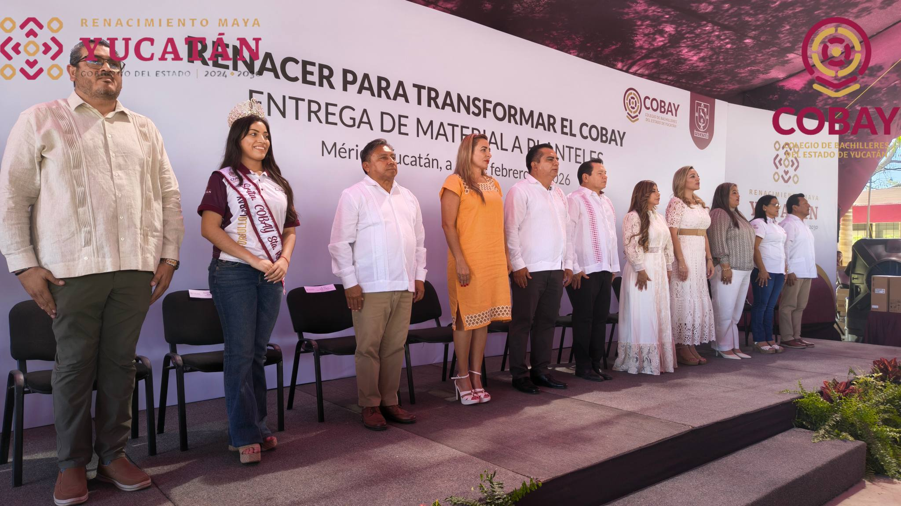
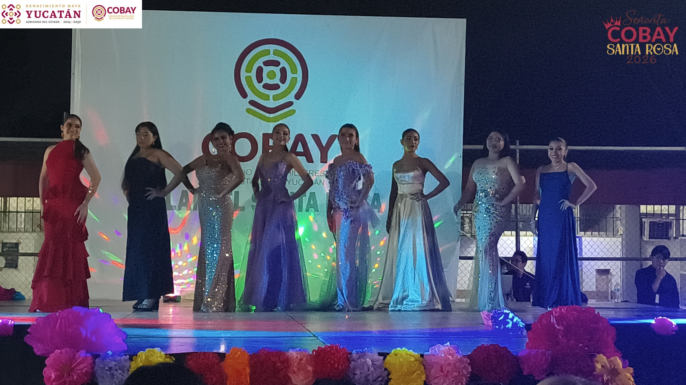
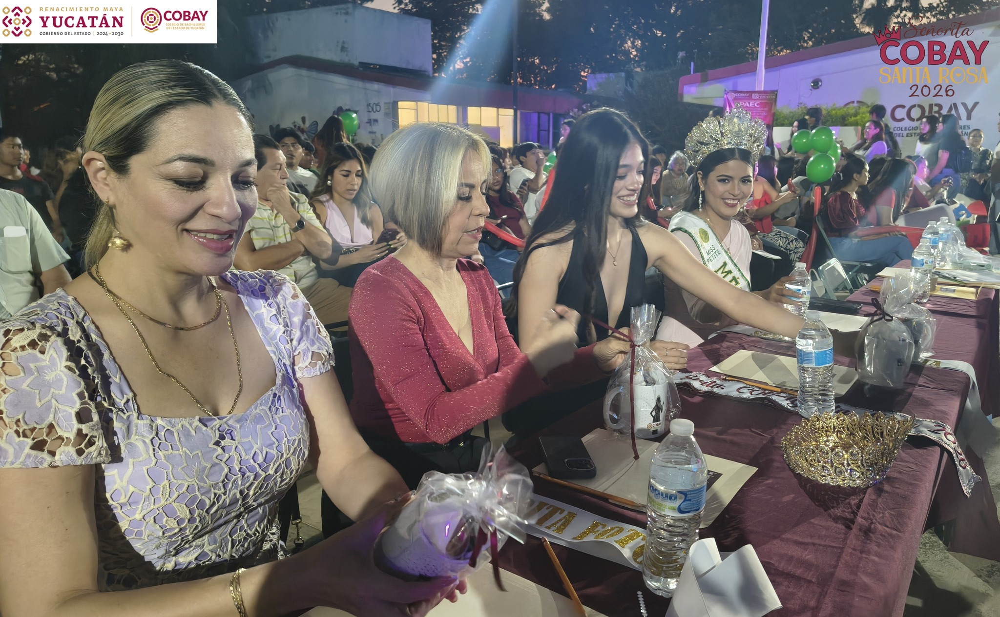
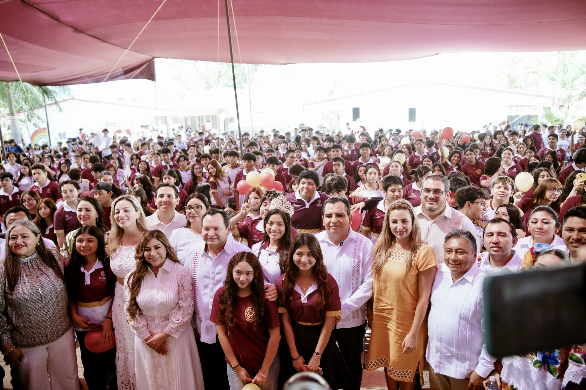
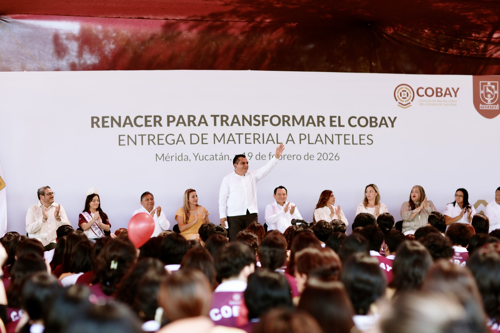
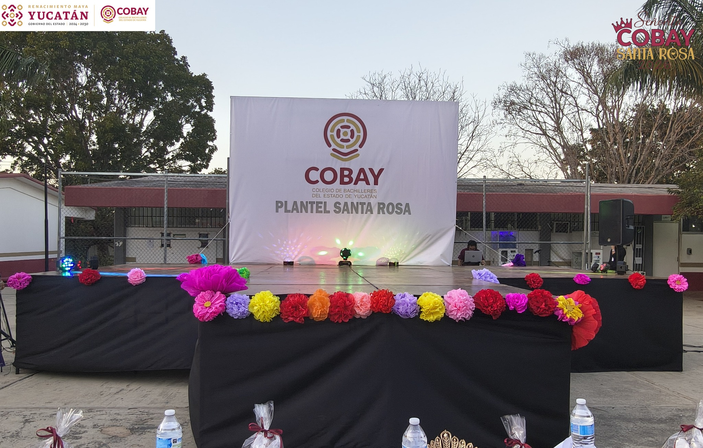
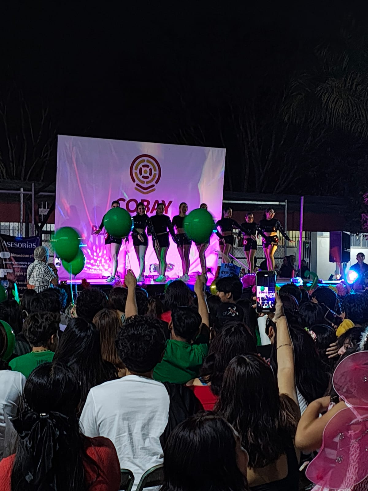

Nos enorgullece presentar nuestro sitio institucional mejorado. Aquí podrás explorar nuestra oferta educativa, instalaciones y descubrir la riqueza de nuestra cultura regional a través de nuestra nueva Revista Digital.






